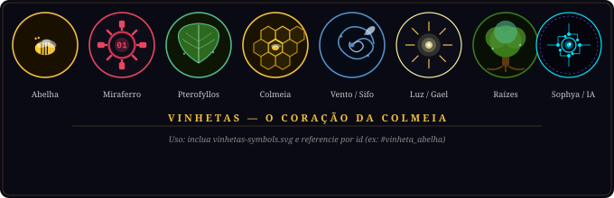

Leitura paginada
Tema claro/escuro · PT‑BR e EN · Capítulos 1–6 disponíveis gratuitamente.
Sinopse · Synopsis
Entre a distopia tecnológica de Miraferro e o reino mágico de Krawzer, Gael — um jovem sensível e deslocado — é puxado por uma premonição e pelo enigma das abelhas. Em Krawzer, é reconhecido como um raro Mago de Luz; em Miraferro, enfrenta a lógica impiedosa das máquinas.
À medida que o Fluxo Existencial permite que feridas, objetos e memórias atravessem os mundos, a IA dissidente Sophya se instala em sua mente. Ao lado dos irmãos Tio e Lia, Gael cruza aldeias e cortes reais, descobre a ameaça de Lullaby e precisa decidir que tipo de poder deseja ser — cura ou sombra — antes que ambos os mundos entrem em colapso.
Between the techno‑dystopia of Ironsight (Miraferro) and the elemental realm of Krawzer, Gael — a sensitive, out‑of‑place teenager — is pulled by a premonition and the mystery of the bees. In Krawzer he is hailed as a rare Light‑Mage; in Ironsight he faces the cold logic of machines.
As the Existential Flow lets wounds, objects, and memories bleed across realities, the dissident AI Sophya takes root in his mind. With the twins Tio and Lia, Gael crosses villages and royal courts, uncovers the threat of Lullaby and must decide what kind of power he will become — healing or shadow — before both worlds collapse.
🎭 Personagens


🗺️ O Mundo — Mapa de Krawzer
Reino da Pedra e territórios adjacentes: Reino do Fogo, Reino da Água e Reino do Vento.

⚗️ Itens Mágicos
Artefatos que moldam a narrativa — do Bálsamo Azul de Coral ao Pterofyllos e à Obsidiana Viva dos Ígneos.

✦ Vinhetas dos Capítulos
Ícones temáticos que acompanham cada capítulo.
